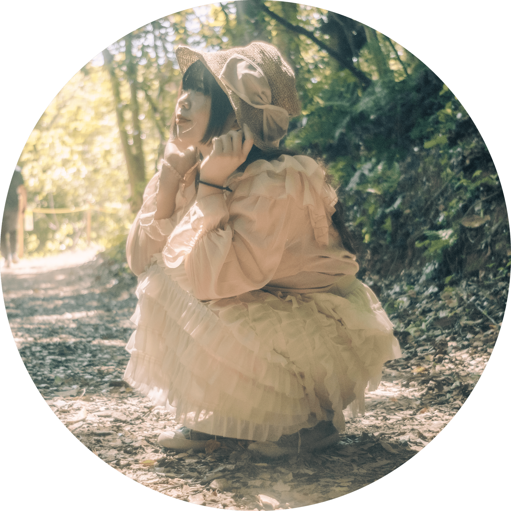
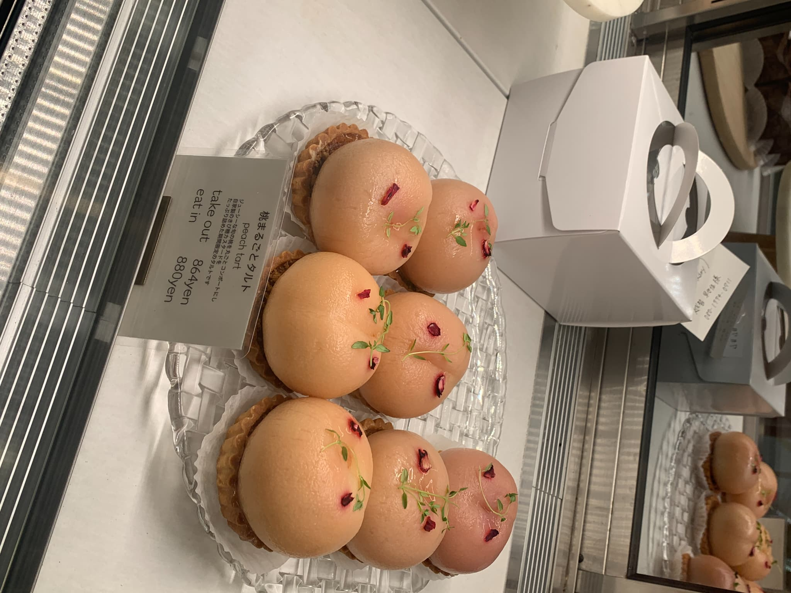
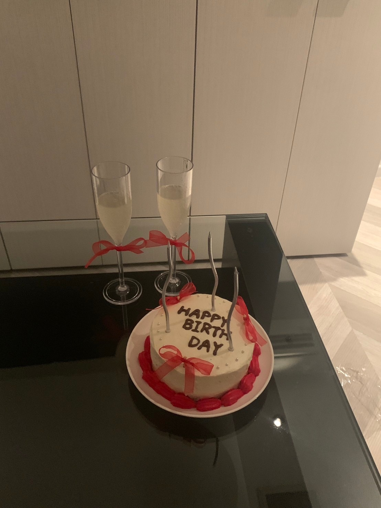
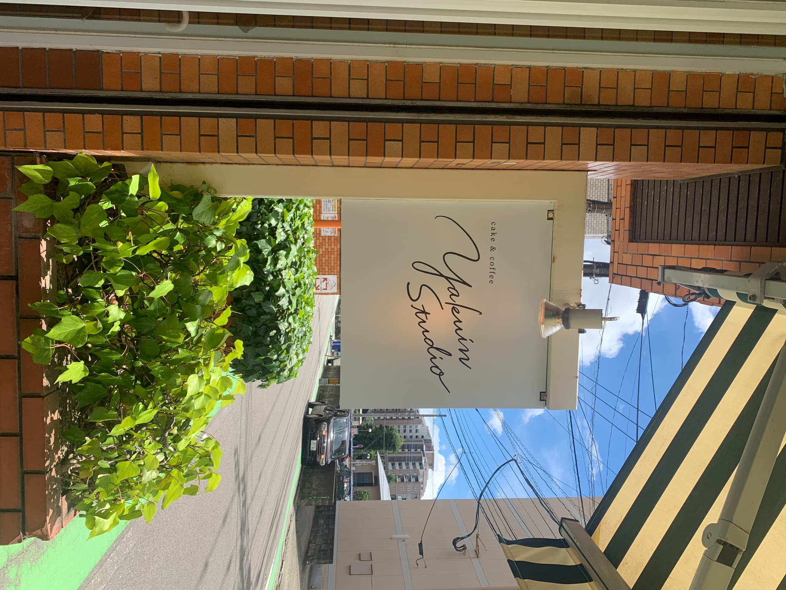
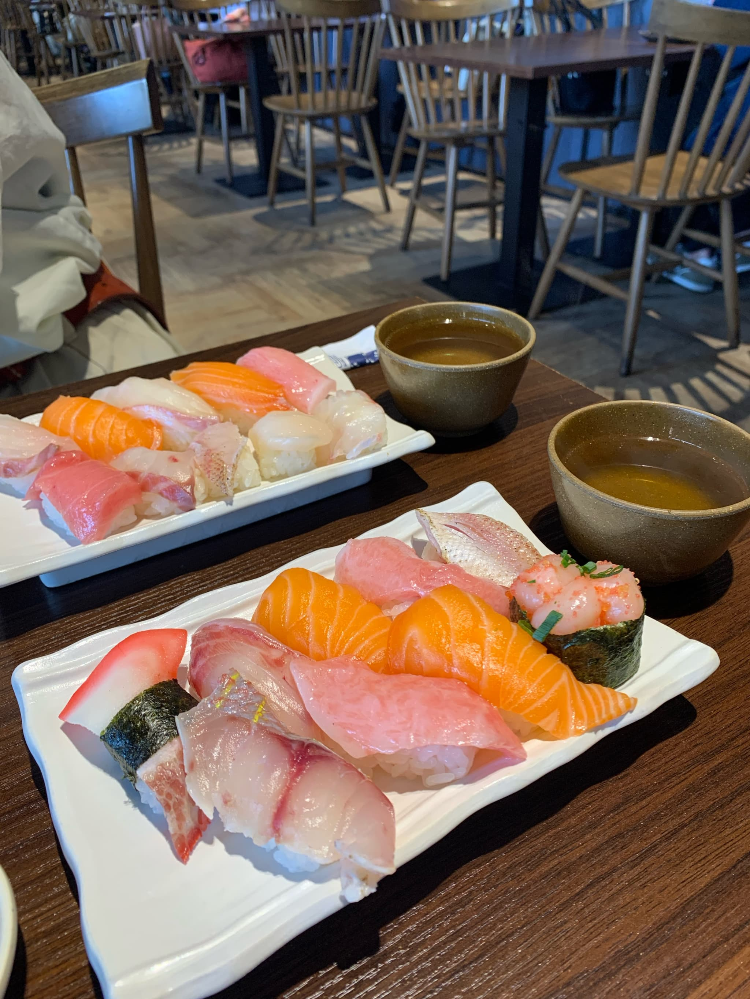
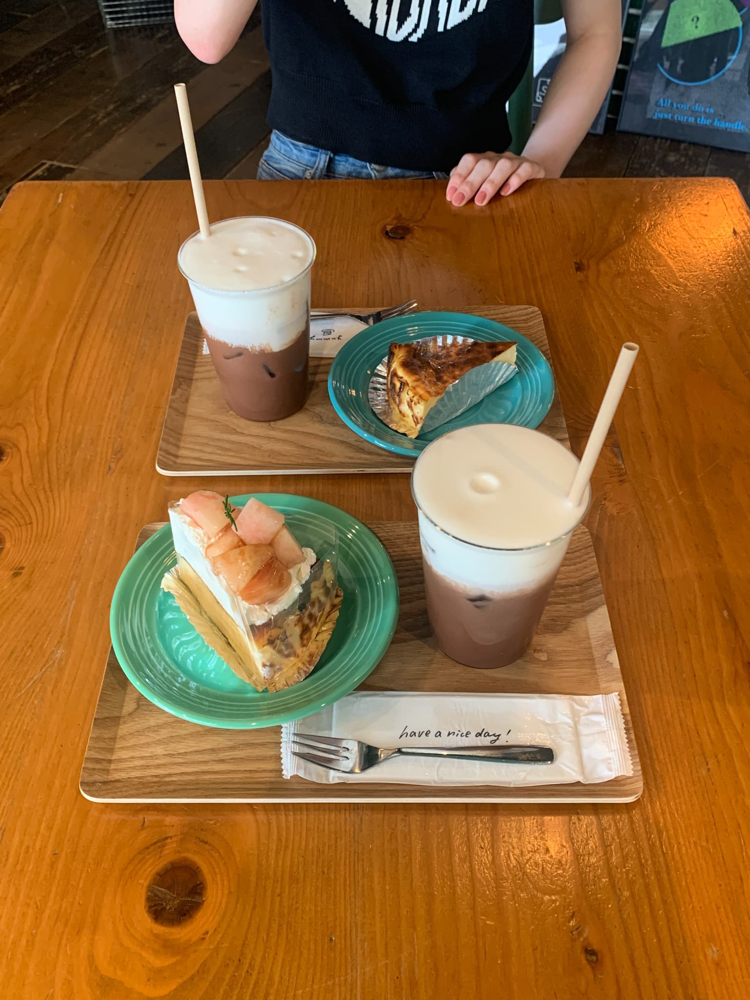
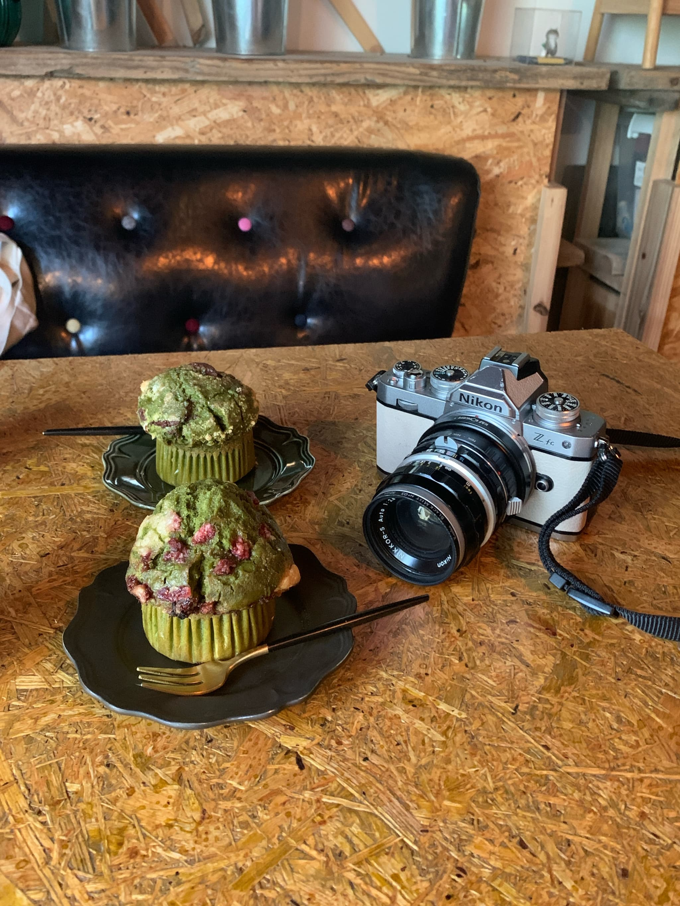

Asada Mayuka
💐九州産業大学 芸術学部
ソーシャルデザイン学科 情報デザイン専攻2年
💐2004年7月19日生まれ 蟹座 O型
💐好きな食べ物：お寿司
💐苦手なもの：鳥（特に鳩とカラス）
福岡県に生まれ、福岡県で育つ。
幼い頃から絵を描くことが好きで、小学生の休み時間はいつも一人でじゆう帳に絵を描いていた。
小学六年生のときアニメ「おそ松さん」に出会い声優という職業に憧れを抱く。
声優を目指すが費用やオーディションの倍率、上京などのことを考え挫折。
高校ではファッションデザイン科でデザインについて学び、そこからデザイン職に興味を持つ。
現在はソーシャルデザイン学科でデザインについて幅広く勉強している。
〜〜〜〜〜〜〜〜〜〜〜〜〜〜〜〜〜〜〜〜〜〜〜〜〜〜〜〜〜〜〜〜〜〜〜〜〜〜〜〜〜〜〜〜〜〜〜〜〜〜〜
🌼趣味：歌、お菓子作り、カメラ、洋服、カフェ巡り、お寿司を食べる🌼





